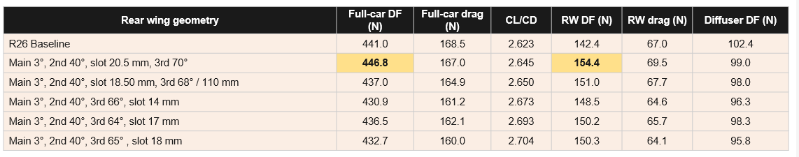
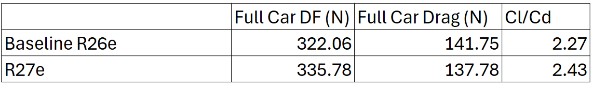
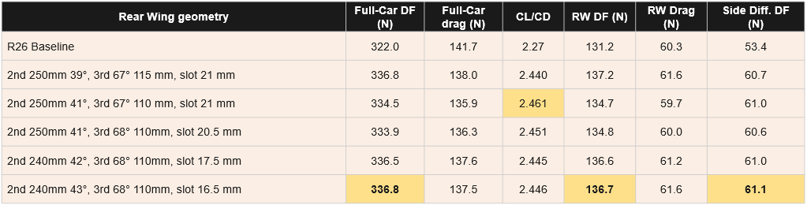

6. Design
6.1 Front Wing
6.1.1 Mainplane
The mainplane of the front wing generates most of the downforce. The NACA 632615 airfoil profile is used for the car, modified to fit manufacturing.
6.1.2 Flap Design and Airfoil Selection
The flaps enable the wing to reach a higher effective camber and those downforce by delaying flow separation. Since different airfoil profiles excel in different tasks, the intermediate flap may not necessarily be the same profile as the last flap.
The R26e utilized curved flaps, which improved cornering performance but introduced a high degree of complexity in manufacturing. Thus the flaps were re-designed to maintain performance without needing to be curved.
From literature review, the Wortmann FX63-137 was the most optimal choice for the intermediate flap, while the Selig 1223 was still the best choice for the final flap. As a bonus, the Wortmann FX63-137 is also easier to manufacture correctly due to its thicker leading edge.
6.1.3 Pressure Distribution Comparison

This is the pressure plot of the inboard side of the R26e front wing, red is high pressure while blue is low pressure. Note how there is a region of high pressure under the leading edge of the final flap.

After changing the intermediate flap to the FX63-137, the pressure plot noticeably improved. There is no longer a region of high pressure under the last flap, and the pressure recovery seems more consistent.
6.2 Rear Wing
6.2.1 Straight-Line Optimisation

The straight line simulation results show that reducing the third element angle from 70° to between 64° and 68° consistently lowered both rear wing downforce and full-car drag. The configuration with the third element at 65° and an 18 mm slot gave the highest CL/CD of 2.704, but its full-car downforce of 432.7 N was below the baseline. Since the aim was to increase total downforce while maintaining or improving efficiency, the selected configuration was: Main Element 3°, Second Element 40°, Third Element 70°, with a 20.5 mm slot gap between the second and third elements. This was the only configuration tested that improved full-car downforce, full-car drag and CL/CD at the same time.
The larger slot gap is thought to be the key enabler of the steeper third element angle. The slot lets higher-energy air from the pressure side of the second element pass through to the suction side of the third element, re-energising the boundary layer. This delays flow separation and lets the third element run at 70° while still generating useful load.


6.2.2 Full-Car Performance Comparison

Compared to the R26 baseline, the Full Car Downforce increased from 441.0N to 446.8N and the Rear Wing Downforce increased from 142.4N to 154.4N. Concurrently, the Full Car Drag decreased from 168.5N to 167.0N, leading to a increase in CL/CD and thus improved aerodynamic efficiency.
6.2.3 Cornering Optimisation

From cornering results, we found that the optimum length of the second and third element to be 240mm and 110mm respectively. Additionally, a slot gap of 16.5mm between the second and third element was found to be ideal for flow attachment to both the elements.